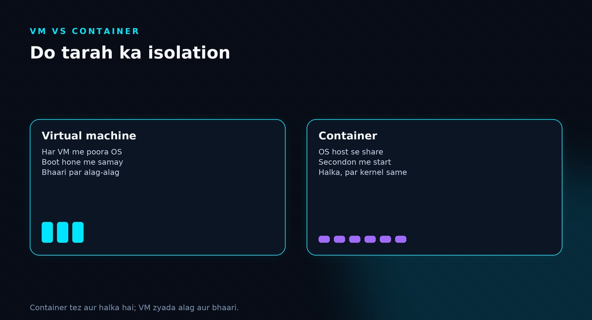
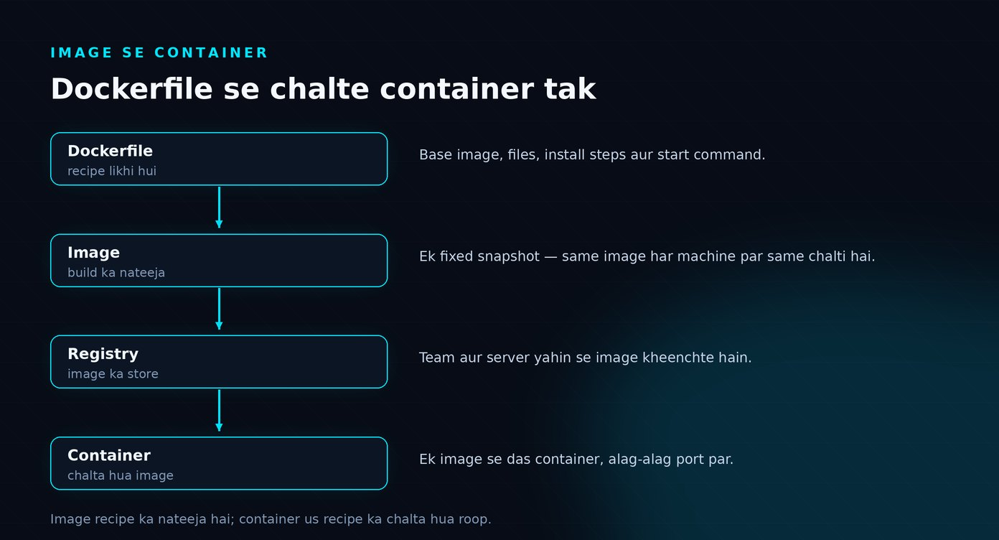

Docker Kya Hai? Container aur VM ka Farq Aasan Bhasha Me
"मेरी machine पर तो चल रहा था" — यह वाक्य software history की सबसे महंगी line है। एक developer के laptop पर app चलती है, server पर वही code fail हो जाता है, क्योंकि वहाँ Node का version अलग है, कोई library missing है, या path कुछ और है। Docker इसी समस्या का जवाब है: app को उसके पूरे माहौल के साथ एक box में बंद कर दो, और वह box जहाँ भी खुले, वहीं वैसे ही चले।
इस guide में मैं Docker को शुरुआत से खोलूँगा — container क्या है, virtual machine से कैसे अलग है, image और container में फर्क, Dockerfile कैसे लिखें, आपका पहला container, आठ commands जो रोज़ काम आते हैं, Compose कब चाहिए, और वे चार जगहें जहाँ नए लोग गलती करते हैं।
छोटा जवाब: Docker एक tool है जो आपकी app को dependencies, settings और files के साथ एक container में पैक करता है। Container एक हल्का box है जो host machine का kernel साझा करता है, इसलिए वह virtual machine से तेज़ चलता है। Image वह पैक है, container उसका चलता हुआ रूप, और Dockerfile वह recipe है जिससे image बनती है।
Docker kya hai — समस्या से शुरू करें
मान लीजिए आपकी app को तीन चीज़ें चाहिए: Python 3.12, PostgreSQL 16 और एक specific system library. अब सोचें कि यही setup पाँच developers के laptop, दो test servers और एक production server पर बनाना है। हर जगह version थोड़ा अलग, किसी के Mac पर path अलग, किसी के Windows पर library install ही नहीं होती।
Docker कहता है — यह setup एक बार लिखो, और फिर हर जगह वही चलाओ। जो चीज़ आपने अपने laptop पर test की, वही production में जाती है, क्योंकि दोनों जगह एक ही image चल रही है। यही वजह है कि Docker आज लगभग हर team के deployment का हिस्सा है।
Docker कोई virtual machine नहीं है, और यह भी याद रखें कि यह security का जादुई tool नहीं है। Container आपको एक जैसा माहौल देता है, पर अगर आपने image में secret डाल दिया, तो वह secret image के साथ ही घूमेगा।
Container aur VM ka farq

Virtual machine में हर VM का अपना पूरा operating system होता है। इसका फायदा है पूरा isolation — एक VM अंदर से अलग मशीन जैसी है। नुकसान यह है कि हर VM को boot होने में समय लगता है, हर VM का OS disk और RAM खाता है, और एक host पर कम ही VMs चल पाती हैं।
Container में OS साझा होता है — वह host के kernel का इस्तेमाल करता है और सिर्फ़ अपनी files, libraries और process लेकर चलता है। इसीलिए वह सेकंडों में शुरू होता है और मेगाबाइट्स में बैठता है, जबकि VM गीगाबाइट्स लेती है।
| पहलू | Virtual machine | Container |
|---|---|---|
| OS | हर VM का अपना | Host से साझा |
| Startup | मिनटों में | सेकंडों में |
| Size | GB में | MB में |
| Isolation | बहुत मज़बूत | अच्छा, पर kernel साझा |
| किसके लिए | अलग OS, पूरा sandbox | app पैक करके चलाना |
इसका मतलब यह नहीं कि VM पुरानी हो गई। जब आपको अलग OS चलाना हो, या बहुत मज़बूत isolation चाहिए, तो VM सही है। ज़्यादातर app deployment के लिए container हल्का और तेज़ विकल्प है।
Image, container, Dockerfile aur registry

Dockerfile: एक text file जिसमें लिखा होता है कि image कैसे बनेगी — कौन सी base image, कौन सी files, कौन सी command चलेगी।
Image: Dockerfile को build करने पर बनी हुई चीज़। यह read-only है और हर जगह एक जैसी चलती है। इसे एक "स्नैपशॉट" समझें।
Container: image का चलता हुआ रूप। एक image से दस containers चला सकते हैं — जैसे एक ही recipe से दस थालियाँ।
Registry: images रखने की जगह, जैसे Docker Hub या company का private registry. Server यहीं से image खींचता है।
आपका पहला container
Docker install करने के बाद terminal खोलें और यह चलाएँ:
docker run hello-worldयह छोटी image खींचेगा और एक संदेश दिखाएगा। अब कुछ असली चीज़:
docker run -d -p 8080:80 --name my-web nginxयहाँ चार चीज़ें हो रही हैं। -d का मतलब container पीछे चले, -p 8080:80 आपके laptop का port 8080 container के port 80 से जोड़ता है, --name container को नाम देता है, और nginx image का नाम है। अब browser में localhost:8080 खोलें — default nginx page दिखेगा।
देखें कि क्या चल रहा है:
docker psरोकें और हटाएँ:
docker stop my-web
docker rm my-webअगर port पहले से इस्तेमाल में हो तो error आएगा — तब दूसरा port चुनें, जैसे -p 8081:80. यह सबसे आम शुरुआती अड़चन है।
Dockerfile kaise likhein
मान लीजिए एक छोटी Python app है जिसमें app.py और requirements.txt हैं। Dockerfile ऐसा दिखेगा:
FROM python:3.12-slim
WORKDIR /app
COPY requirements.txt .
RUN pip install --no-cache-dir -r requirements.txt
COPY . .
EXPOSE 8000
CMD ["python", "app.py"]हर line का काम समझें। FROM base image चुनती है — slim वाला छोटा रहता है। WORKDIR अंदर का folder तय करता है। पहले सिर्फ़ requirements copy करके install करना एक तरकीब है: जब code बदले पर requirements न बदलें, तो Docker को install वाला step दोबारा नहीं करना पड़ता और build तेज़ होता है। COPY . . बाकी code डालता है। CMD बताता है कि container शुरू होने पर क्या चले।
Build और run:
docker build -t my-app .
docker run -p 8000:8000 my-appएक ज़रूरी आदत: .dockerignore file बनाएँ और उसमें .git, node_modules, .venv, .env डालें। वरना ये सब image में चले जाएँगे — image भारी होगी और secret भी अंदर आ सकता है।
आठ commands जो रोज़ काम आते हैं
| Command | काम |
|---|---|
| docker ps -a | सारे containers, बंद वाले भी |
| docker images | local images की सूची |
| docker logs -f name | container के logs देखना |
| docker exec -it name sh | container के अंदर shell |
| docker build -t tag . | image बनाना |
| docker run ... | container चलाना |
| docker compose up -d | कई services एक साथ |
| docker system prune | फालतू data साफ़ करना |
"कुछ काम नहीं कर रहा" की सबसे तेज़ जाँच है: docker ps -a से देखें कि container बंद तो नहीं हो गया, फिर docker logs पढ़ें। ज़्यादातर समस्याएँ वहीं साफ़ दिख जाती हैं।
Docker Compose kab चाहिए
जब app में एक से ज़्यादा हिस्से हों — app, database, cache — तो हर एक को अलग command से चलाना थकाऊ हो जाता है। Compose में सब एक YAML file में लिख दिया जाता है, और एक command से सब चल जाता है।
services:
web:
build: .
ports: ["8000:8000"]
depends_on: [db]
db:
image: postgres:16
environment:
POSTGRES_PASSWORD: example
volumes:
- pgdata:/var/lib/postgresql/data
volumes:
pgdata:Compose में दो आदतें काम आती हैं। पहला — service का नाम इस्तेमाल करें, localhost नहीं। जब app को database से बात करनी हो, तो host db लिखें, क्योंकि container के अंदर localhost का मतलब वह container खुद होता है। दूसरा — values को .env file से लाएँ, code में न लिखें।
यहाँ volumes वाली line सबसे ज़रूरी है। Container बंद होने पर उसके अंदर का data चला जाता है; database का data बचाने के लिए उसे volume में रखना पड़ता है। यह बात नई team के साथ सबसे ज़्यादा महंगी गलती बनती है — "database खाली क्यों हो गया" का जवाब अक्सर यही होता है।
चार जगहें जहाँ ध्यान रखें
1. Secret image में न डालें। Dockerfile या image में API key लिखना उसे हर उस जगह भेज देता है जहाँ image जाती है। Secrets runtime पर environment variables या secret manager से दें।
2. Image छोटी रखें। छोटी image तेज़ deploy होती है और उसमें कम कमज़ोरियाँ होती हैं। slim/alpine base चुनें, build के बाद cache साफ़ करें, और ज़रूरत न हो तो पूरा SDK image में न रखें।
3. root user से न चलाएँ। Production में container को non-root user से चलाने की आदत डालें। यह एक line का बदलाव है और सुरक्षा में बड़ा फर्क लाता है।
4. Logs को बाहर निकालें। Container के अंदर file में log लिखना ठीक नहीं, क्योंकि container हटने पर log भी चला जाएगा। Logs stdout पर लिखें और बाहर से इकट्ठा करें।
Container को server पर ले जाना
Laptop पर चलाना आधा काम है; server पर चलाना दूसरा आधा। तीन साफ़ रास्ते हैं। पहला — registry: image को tag के साथ push करें, server पर pull करें और run करें। यह सबसे सीधा तरीका है और छोटी team के लिए काफ़ी है। दूसरा — एक ही server पर Compose: जब app, database और cache तीनों एक machine पर चलने हों। तीसरा — managed container platform: जहाँ image देने पर platform खुद scaling, restart और HTTPS सँभालता है।
किसी भी रास्ते पर एक आदत ज़रूरी है — image को version tag दें, सिर्फ़ latest पर न छोड़ें। जब नया deploy गड़बड़ करे, तो पुराना tag वापस चलाकर दो मिनट में पीछे लौटा जा सकता है। latest के साथ यह पता ही नहीं चलता कि पहले कौन सा version चल रहा था।
Deploy से पहले तीन जाँच करें: container non-root user से चल रहा है या नहीं, secrets बाहर से आ रहे हैं या image में घुसे हैं, और health check जुड़ा है या नहीं। यही तीन चीज़ें बाद में सबसे ज़्यादा परेशान करती हैं।
Docker kab zaroori nahi hai
अगर आपके पास एक छोटी static site है जो किसी shared hosting पर चल रही है, तो Docker जोड़ने से सिर्फ़ एक नई परत बनेगी। अगर आप अकेले एक छोटा script चला रहे हैं, तो virtual environment काफ़ी है। अगर team में सिर्फ़ दो लोग हैं और सब एक जैसा laptop इस्तेमाल करते हैं, तो शायद पहले setup document लिखना ज़्यादा फायदेमंद हो।
Docker तब सबसे ज़्यादा फायदा देता है जब: team बड़ी हो, deployments बार-बार हों, या कई services एक साथ चलानी हों। तब यह "मेरी machine पर चलता था" वाली समस्या को लगभग खत्म कर देता है।
Mera anubhav
मेरी पहली Docker image 1.2 GB की थी, क्योंकि मैंने base image के तौर पर पूरा build tools वाला image लिया और .dockerignore नहीं बनाया। Deploy हर बार धीमा होता था और मुझे लगता था कि server खराब है। जब मैंने slim base और multi-stage build इस्तेमाल किया, वही image 180 MB की हो गई और deploy का समय एक-चौथाई रह गया।
दूसरी बात जो मैंने सीखी: container के अंदर झाँकने की आदत बहुत काम आती है। docker exec -it name sh से अंदर जाकर देखें कि files कहाँ हैं, environment variables क्या हैं, और process चल रहा है या नहीं। आधी समस्याएँ उसी समय साफ़ हो जाती हैं।
तीसरी बात: Docker सीखने का सबसे अच्छा तरीका अपनी ही app को पैक करना है। कोई tutorial project नहीं — अपना वही project जो आप रोज़ चलाते हैं। जब वह एक command से चलने लगे, तब समझ आती है कि सब कुछ किस हद तक आसान हो सकता है।
नतीजा
Docker आपकी app और उसके माहौल को एक image में पैक करता है, और container उसे हर जगह एक जैसा चलाता है। VM से यह हल्का है क्योंकि OS साझा होता है। शुरुआत के लिए चार चीज़ें काफ़ी हैं: एक Dockerfile, एक .dockerignore, दो commands (build और run), और logs पढ़ने की आदत। जब दूसरी service जुड़े, तब Compose आ जाएगा।
अक्सर पूछे जाने वाले सवाल
क्या Docker सीखने के लिए Linux आना चाहिए?
ज़रूरी नहीं। Docker Desktop Windows और Mac पर चल जाता है। पर container के अंदर basic Linux commands — ls, cat, ps — काम आते हैं।
क्या container का data बचता है?
नहीं, container हटने पर उसके अंदर का data चला जाता है। बचाने के लिए volume इस्तेमाल करें, और database के लिए यह अनिवार्य है।
Docker और Kubernetes में क्या रिश्ता है?
Docker image बनाता और चलाता है; Kubernetes कई containers को कई machines पर सँभालता है। छोटे setup में Docker काफ़ी है, बड़े में orchestration चाहिए।
क्या image को छोटा करना ज़रूरी है?
हर बार नहीं, पर फायदेमंद है। छोटी image तेज़ deploy होती है, कम जगह लेती है और उसमें कम अनचाही libraries होती हैं।
क्या Docker production के लिए सुरक्षित है?
हाँ, अगर basics ठीक हों — non-root user, secrets बाहर, image update, और registry से ही deploy. Container खुद security नहीं देता; वह आपके setup पर निर्भर है।